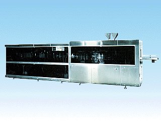

KBF-2000型 三方･四方･スタンドパウチ包装機
生産終了機

特 徴
■
三方シール・四方シール・スタンドパウチの各包装形態ができます。また，それぞれにジッパー（オプション）が組み込めます。
■
製袋式のため，給袋式に比べて包装紙のコストの低減ができます。
■
2袋送り方式を採用していますので，高速です。
■
製袋してから充填する方式なので仕上がりが綺麗です。
■
ACサーボモータ同時6軸制御の高性能機です。
■
定評有る当社独自の16ビットマイコンのソフト・ハード技術搭載により，操作性は抜群です。
■
フィルム自動蛇行調整機能が標準装備されています。
■
切り裂きノッチや下部コーナーカット等にも対応できます。（オプション）
仕 様
■
使 用 例
液体，粘体，半練り製品，練り製品，粉体，粒体，バラ物等，あらゆる性状に対応できます。
■
能 力
40〜100袋/分
■
包装材料
各種ラミネートフィルム
■
袋寸法範囲
幅 80〜120mm, 110〜170mm
高さ 140〜280mm
■
巻 取 紙
幅 270〜650mm
外径最大 φ400mm
■
巻取紙管
内径 φ75mm
■
機械寸法
長さ 6,390mm
幅 1,170mm
高さ 1,650mm
■
重 量
6,600kg
■
使用電力
三相，200V，15kW，75A
■
使用空気量
600KPa，400l/分
※内容は，改良等により予告なく変更することがあります。
HOMEへ戻る
Copyright (C) KAWASHIMA PACKAGING MACHINERY CO.,LTD. All Rights Reserved.